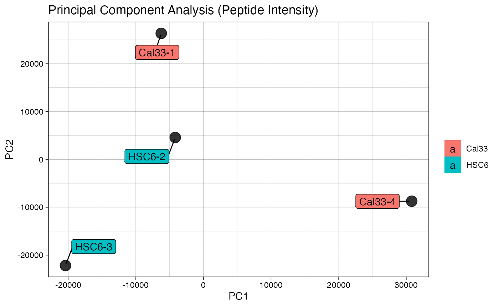
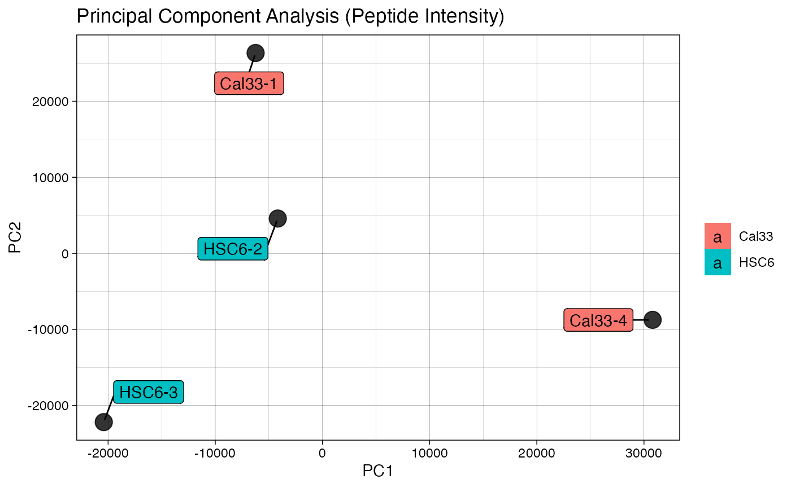
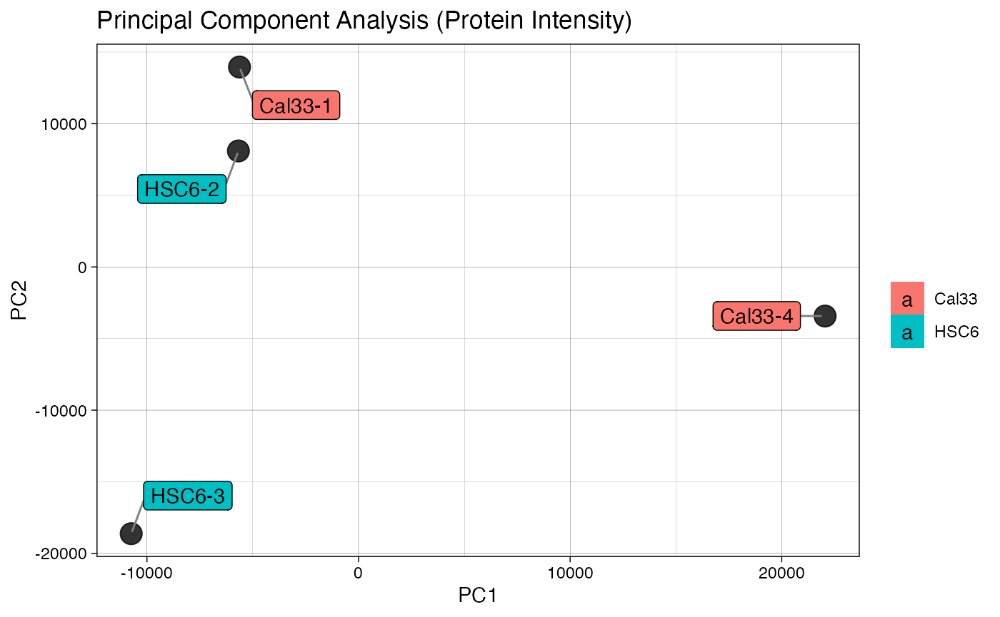
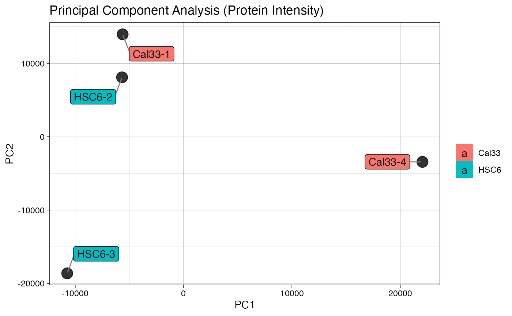

artMS: Analytical R Tools for Mass Spectrometry
David Jimenez-Morales
2021-01-06
Source:vignettes/artMS_vignette.Rmd
artMS_vignette.RmdOVERVIEW
artMS is a Bioconductor package that provides a set of tools for the analysis and integration of large-scale proteomics (mass-spectrometry-based) datasets obtained using the popular proteomics software MaxQuant.
The functions available in artMS, which can be grouped into the following categories:
- Multiple quality control (QC) functions.
- Relative quantification using MSstats.
- Downstream analysis and integration of quantifications (enrichment, clustering, PCA, summary plots, etc)
- Generation of input files for other tools, including SAINTq, SAINTexpress, Photon, and Phosfate
Click here for details about all the functions available in artMS.
For a graphical overview check the slides presented at the 2019 SUMS-RAS (Stanford University Mass Spectrometry - Research Application Symposium)
artMS also perfoms basic quality control and relative quantification for metabolomics datasets obtained using the alignment table generated by MarkerView. However, this functionality is not stable.
How to install
Before you begin, ensure that your system is running an R version >= 3.6 or the installation of artMS won’t work. You can check the R version running on your system by executing the function getRversion()
If the outcome is >= 3.6.0, congratulations! you can move forward. If it is not, then you need to install the latest version of R in your system.
Two options to install artMS:
- Official BioConductor releases (recommended). artMS is available in BioConductor. Instructions on how to install the package are available here.
(Why Bioconductor? Here you can find a nice summary of many good reasons).
-
Development version from Github. (Warning: not stable, but it has the latest). Assuming that you have an
R (>= 3.6)version running on your system, follow these steps:
install.packages("devtools")
library(devtools)
install_github("biodavidjm/artMS")Once installed, the package can be loaded and attached to your current workspace as follows:
## ## Input files
artMS performs the different analyses taking as input the following files:
- evidence.txt file: output of the quantitative proteomics software package MaxQuant.
- keys.txt (tab-delimited) txt file generated by the user describing the experimental design.
- contrast.txt (tab-delimited) txt file generated by the user with the comparisons between conditions to be quantified.
Check below to find out more about generating the input files.
Configuration file
artmsQuantification() requires a large number of arguments, specially those related to the statistical package MSstats. To facilite the task of providing all those arguments, the function artmsQuantification() takes a config file (in yaml format) for the customization of the parameters for quantification (using MSstats) and other operations, including QC analyses, charts, and annotations.
A configuration file template can be generated by running artmsWriteConfigYamlFile()
Check below to learn the details of the configuration file.
Basic workflows
Proteomics
Generate the input files: Check the input files section for details
-
Quality Control: if you are interested in performing only quality control analysis, run the following functions:
-
artmsQualityControlEvidenceBasic(): QC based on theevidence.txtfile -
artmsQualityControlEvidenceExtended(): based on theevidence.txtfile -
artmsQualityControlSummaryExtended(): based on thesummary.txtfile
-
-
Relative Quantification: fill up the configuration file and run the following function:
-
Analysis of Quantifications: performs annotations, clustering analysis, PCA analysis, enrichment analysis by running the function
Miscellaneous functions: Check below to discover more useful functions provided by the
artMSpackage.
Metabolomics (unstable)
artMS also enables the relative quantification of untargeted polar metabolites using the alignment table generated by MarkerView. This means that the metabolites do not need to have an ID, as the m/z and retention time will be used as identifiers. Typical workflow:
Run QC on the metabolomics dataset:
artmsQualityControlMetabolomics()Relative quantification:
artmsQuantification()(notice that a few options must be changed in the config file before running the function)
Please, keep in mind that most of the functions available in artMS don’t work for metabolomics data due to annotation issues (protein/gene ids are the primary ids for most of the functions). Check the metabolomics section to find out more.
REQUIRED INPUT FILES
Input files
Three basic (tab-delimited) files are required to perform the full pack of operations:
evidence.txt
The output of the quantitative proteomics software package MaxQuant. It combines all the information about the identified peptides.
keys.txt
Tab delimited file generated by the user. It summarizes the experimental design of the evidence file. artMS merges the keys.txt and evidence.txt by the “RawFile” column. Each RawFile corresponds to a unique individual experimental technical replicate / biological replicate / Condition / Run.
For any basic label-free proteomics experiment, the keys file must contain the following columns and rules:
- RawFile: The name of the RAW-file for which the mass spectral data was derived from.
-
IsotopeLabelType:
'L'for label free experiments ('H'will be used for SILAC experiments, see below) -
Condition: The conditions names must follow these rules:
- Use only letters (A - Z, both uppercase and lowercase) and numbers (0 - 9). The only special character allowed is underscore (
_). - Very important: A condition name cannot begin with a number (R limitation).
- Use only letters (A - Z, both uppercase and lowercase) and numbers (0 - 9). The only special character allowed is underscore (
-
BioReplicate: biological replicate number. It is based on the condition name. Use as prefix the corresponding
Conditionname, and add as suffixdash (-)plus the biological replicate number. For example, if conditionH1N1_06Hhas too biological replicates, name themH1N1_06H-1andH1N1_06H-2 - Run: a unique number for all the MS runs (from 1 to the total number of raw files). It will be especially useful when having technical replicates. For example, in the table below, there are 2 technical replicates of the same biological replicate (Cal_33-1, technical replicates 1 and 2). A special case is SILAC experiments (H and L label are run simultaneously. See below to find out more)
| RawFile | IsotopeLabelType | Condition | BioReplicate | Run |
|---|---|---|---|---|
| qx006145 | L | Cal_33 | Cal_33-1 | 1 |
| qx006146 | L | Cal_33 | Cal_33-1 | 2 |
| qx006148 | L | Cal_33 | Cal_33-2 | 3 |
| qx006151 | L | HSC6 | HSC6-1 | 4 |
| qx006152 | L | HSC6 | HSC6-2 | 5 |
For more examples, check the artMS data object artms_data_ph_keys
Tip: it is recommended to use Microsoft Excel (OpenOffice Cal / or similar) to generate the keys file. Do not forget to choose the format = Tab Delimited Text (.txt) when saving the file (use save as option)
contrast.txt
The comparisons between conditions that the user wants to quantify.
- Example #1: the comparison for the keys described above would be:
HSC6-Cal_33- Example #2: let’s quantify changes in protein abundance between wild type (
WT_A549) relative to two additional experimental conditions with drugs (WT_DRUG_AandWT_DRUG_B), but also changes in protein abundance betweenDRUG_AandDRUG_B, the contrast file would look like this:
WT_DRUG_A-WT_A549
WT_DRUG_B-WT_A549
WT_DRUG_A-WT_DRUG_BRequirements:
- The two conditions to be compared must be separated by a dash symbol (
-), and only one dash symbol is allowed, i.e., only one comparison per line.
As a result of the quantification, the condition on the left will take the positive log2FC sign -if the protein is more abundant in condition on the left (numerator), and the condition on the right the negative log2FC -if a protein is more abundant in condition on the right term (denominator).
Example of wrong comparisons
Only condition names are allowed. Individual Bioreplicates cannot be compared. For example, this is wrong:
HSC6-Cal_33-1The artMS configuration file
The configuration file (in yaml format) contains a variety of options available for the QC, quantification, and annotations performed by artMS.
To generate a sample configuration file, go to the project folder (setwd(/path/to/your/working/folder/)) and execute:
library(artMS)
artmsWriteConfigYamlFile(config_file_name = "my_config.yaml")Open the my_config.yaml file with your favorite editor (RStudio for example). Note: Although the configuration file might look complex, the default options work very well.
The configuration (yaml) file contains the following sections:
Section: files
files :
evidence : /path/to/the/evidence.txt
keys : /path/to/the/keys.txt
contrasts : /path/to/the/contrast.txt
summary: /path/to/the/summary.txt # Optional
output : /path/to/the/results_folder/ph-results.txtThe file path/name of the required files. It is recommended to create a new folder in your folder project (for example, results_folder). The results file name (e.g. -results.txt) will be used as prefix for the several files (txt and pdf) that will be generated.
Section: qc
qc:
basic: 1 # 1 = yes; 0 = no
extended: 1 # 1 = yes; 0 = no
extendedSummary: 0 # 1 = yes; 0 = noSelect to perform both ‘basic’ and ‘extended’ quality control based on the evidence.txt file or ‘extendedSummary’ based on the summary.txt file. Read below to find out more about the details of each type of analysis.
Section: data
data:
enabled : 1 # 1 = yes; 0 = no
fractions:
enabled : 0 # 1 for protein fractionation
silac:
enabled : 0 # 1 for SILAC experiments
filters:
enabled : 1
contaminants : 1
protein_groups : remove # remove, keep
modifications : AB # PH, UB, AC, AB, APMS
sample_plots : 1 # correlation plotsLet’s break it down data:
enabled : 1: to pre-process the data provided in the files section.0: won’t process the data (and a pre-generated MSstats file will be expected)-
fractions: Multiple fractionation or separation methods are often combined in proteomics to improve signal-to-noise and proteome coverage and to reduce interference between peptides in quantitative proteomics.-
enabled : 1for fractionation dataset. See Special case: Protein Fractionation below for details -
enabled : 0no fractions
-
-
silac:-
enabled : 1: check if the files belong to a SILAC experiment. See Special case: SILAC below for details -
enabled : 0: no silac experiment (default)
-
-
filters:-
enabled : 1Enables filtering (this section) -
contaminants : 1Removes contaminants (CON__andREV__labeled by MaxQuant) -
protein_groups : removechoose whetherremoveorkeepprotein groups -
modifications : ABany of the proteomics experiments,PH,UB, orACfor posttranslational modifications,ABorAPMSotherwise.
-
-
sample_plots-
1Generate correlation plots -
0otherwise
-
Section: MSstats
msstats :
enabled : 1
msstats_input : # `-mss.txt` file or blank (default)
profilePlots : none
normalization_method : equalizeMedians
normalization_reference : # blank (default) if equalizeMedians
summaryMethod : TMP
censoredInt : NA
cutoffCensored : minFeature
MBimpute : 1
feature_subset: allLet’s break it down:
-
enabled :Choose1to run MSstats,0otherwise. -
msstats_input :leave it blank if MSstats will be run (previousenabled : 1). But if MSstats was already run and theevidence-mss.txtfile is available, then chooseenabled : 0and provide here theevidence-mss.txtfile path/name -
profilePlots :Choose one of the following options:-
beforeplot before normalization -
afterplot after normalization -
before-after: recommended, although computational expensive -
noneno normalization plots
-
-
normalization_method :available options:equalizeMediansquantile-
0: no normalization (not recommended) -
globalStandardsif selected, specified the reference protein innormalization_reference(next)
-
normalization_reference :UniProt id ifglobalStandardsis chosen as thenormalization_method(above) -
summaryMethod :TMP # “TMP”(default) means Tukey’s median polish, which is robust estimation method. “linear” uses linear mixed model. “logOfSum” conducts log2 (sum of intensities) per run. -
censoredInt :-
NA(default) Missing values are censored or at random. ‘NA’ assumes that all ‘NA’s in ’Intensity’ column are censored. -
0uses zero intensities as censored intensity. In this case, NA intensities are missing at random. The output from Skyline should use0. Null assumes that allNAintensities are randomly missing.
-
-
cutoffCensored :-
minFeatureCutoff value for censoring. Only withcensoredInt : NAor0. Default is ‘minFeature’, which uses minimum value for each feature. -
minFeatureNRunuses the smallest between minimum value of corresponding feature and minimum value of corresponding run. -
minRunuses minimum value for each run.
-
-
MBimpute :-
TRUEonly forsummaryMethod="TMP"andcensoredInt='NA'or0. TRUE (default) imputes ‘NA’ or ‘0’ (depending on censoredInt option) by Accelerated failure model. -
FALSEuses the values assigned by cutoffCensored.
-
-
feature_subset :-
all: default -
highQuality: this option seems to be buggy right now
-
Check MSstats documentation to find out more about every option.
Section: output_extras
enabled : 1 # if 0, won't process anything on this section
annotate :
enabled: 1
species : HUMAN
plots:
volcano: 1
heatmap: 1
LFC : -1 1 # Range of minimal log2fc
FDR : 0.05 # adjusted p-value, false discovery rate
heatmap_cluster_cols : 0
heatmap_display : log2FC # log2FC or pvalueExtra actions to perform based on the MSstats results, including annotations and plots (heatmaps and volcano plots). Let’s break it down:
-
enabled :1 (default) enables this section, 0 turns it off -
annotate :-
enabled: 1 (default), will generate a-results-annotated.txtfile that includesGeneandProtein.Name(only for supported species) -
species: The supported species are: HUMAN, MOUSE, ANOPHELES, ARABIDOPSIS, BOVINE, WORM, CANINE, FLY, ZEBRAFISH, ECOLI_STRAIN_K12, ECOLI_STRAIN_SAKAI, CHICKEN, RHESUS, MALARIA, CHIMP, RAT, YEAST, PIG, XENOPUS
-
-
plots :options for additional plots-
volcano :1 -
LFC :log2 fold change cutoff (minimal negative and positive value) -
FDR :false discovery rate cutoff for significance (recommended: 0.05) -
heatmap :correlation plots -
heatmap_cluster_cols :1 perfoms clustering of columns, 0 (default) doesn’t -
heatmap_display :choose to display eitherlog2FCorpvalue
-
Special case: Protein fractionation
To handle protein fractionation experiments, two options must be activated
-
keys.txt: The keys file must contain an additional column named “FractionKey” with the information about fractions. For example:
| Raw.file | IsotopeLabelType | Condition | BioReplicate | Run | FractionKey |
|---|---|---|---|---|---|
| S9524_Fx1 | L | AB | AB-1 | 1 | 1 |
| S9524_Fx2 | L | AB | AB-1 | 1 | 2 |
| S9524_Fx3 | L | AB | AB-1 | 1 | 3 |
| S9524_Fx4 | L | AB | AB-1 | 1 | 4 |
| S9524_Fx5 | L | AB | AB-1 | 1 | 5 |
| S9524_Fx6 | L | AB | AB-1 | 1 | 6 |
| S9524_Fx7 | L | AB | AB-1 | 1 | 7 |
| S9524_Fx8 | L | AB | AB-1 | 1 | 8 |
| S9524_Fx9 | L | AB | AB-1 | 1 | 9 |
| S9524_Fx10 | L | AB | AB-1 | 1 | 10 |
| S9525_Fx1 | L | AB | AB-2 | 2 | 1 |
| S9525_Fx2 | L | AB | AB-2 | 2 | 2 |
| S9525_Fx3 | L | AB | AB-2 | 2 | 3 |
| S9525_Fx4 | L | AB | AB-2 | 2 | 4 |
| S9525_Fx5 | L | AB | AB-2 | 2 | 5 |
| S9525_Fx6 | L | AB | AB-2 | 2 | 6 |
| S9525_Fx7 | L | AB | AB-2 | 2 | 7 |
| S9525_Fx8 | L | AB | AB-2 | 2 | 8 |
| S9525_Fx9 | L | AB | AB-2 | 2 | 9 |
| S9525_Fx10 | L | AB | AB-2 | 2 | 10 |
| S9526_Fx1 | L | AB | AB-3 | 3 | 1 |
| S9526_Fx2 | L | AB | AB-3 | 3 | 2 |
| S9526_Fx3 | L | AB | AB-3 | 3 | 3 |
| S9526_Fx4 | L | AB | AB-3 | 3 | 4 |
| S9526_Fx5 | L | AB | AB-3 | 3 | 5 |
| S9526_Fx6 | L | AB | AB-3 | 3 | 6 |
| S9526_Fx7 | L | AB | AB-3 | 3 | 7 |
| S9526_Fx8 | L | AB | AB-3 | 3 | 8 |
| S9526_Fx9 | L | AB | AB-3 | 3 | 9 |
| S9526_Fx10 | L | AB | AB-3 | 3 | 10 |
-
config.yaml: Enable fractions in the configuration file as follow:
fractions:
enabled : 1 # 1 for protein fractions, 0 otherwiseSpecial case: SILAC
One of the most widely used techniques that enable relative protein quantification is stable isotope labeling by amino acids in cell culture (SILAC). The keys.txt file can capture the typical SILAC experiment. The following example shows a SILAC experiment with two conditions, two biological replicates, and two technical replicates:
| RawFile | IsotopeLabelType | Condition | BioReplicate | Run |
|---|---|---|---|---|
| QE20140321-01 | H | iso | iso-1 | 1 |
| QE20140321-02 | H | iso | iso-1 | 2 |
| QE20140321-04 | L | iso | iso-2 | 3 |
| QE20140321-05 | L | iso | iso-2 | 4 |
| QE20140321-01 | L | iso_M | iso_M-1 | 1 |
| QE20140321-02 | L | iso_M | iso_M-1 | 2 |
| QE20140321-04 | H | iso_M | iso_M-2 | 3 |
| QE20140321-05 | H | iso_M | iso_M-2 | 4 |
It is also required to activate the silac option in the yaml file as follows:
silac:
enabled : 1 # 1 for SILAC experimentsQUALITY CONTROL
artMS provides 3 functions to perform QC analyses.
Basic QC (evidence.txt-based)
The basic quality control analysis takes as input both the evidence.txt and keys.txt files and generates several QC plots exploring different aspects of the MS data. Run it as follows:
artmsQualityControlEvidenceBasic(
evidence_file = artms_data_ph_evidence,
keys_file = artms_data_ph_keys,
prot_exp = "PH")The following pdf can be generated:
- plotCORMAT (qcBasic_evidence.qcplot.CorrelationMatrix.pdf) (default): Correlation matrix for technical replicates (if available), biological replicates, and conditions based on MS Intensity values
- plotCORMAT (qcBasic_evidence.qcplot.CorrelationMatrixCluster.pdf (default): Clustered version of the Correlation matrices as for .CorrelationMatrix.pdf
-
plotINTMISC (qcBasic_evidence.qcplot.IntensityStats.pdf): several pages, including bar plots of Total Sum of Intensities in BioReplicates, Total Sum of Intensities in Conditions, Total Peptide Counts in BioReplicates,
Total Peptide Counts in conditions grouped by categories (CON: contaminants,PROTpeptides,REVreversed sequences used by MaxQuant to estimate the FDR); Box plots of MS Intensity values per biological replicates and conditions; bar plots of total intensity (excluding contaminants) by bioreplicates and conditions; Bar plots of total feature counts by bioreplicates and conditions. -
plotPTMSTATS (qcBasic_evidence.qcplot.PTMStats.pdf): If any PTM is selected (
PH,UB,AC) an extra pdf file will be generated with stats related to the selected modification, including: bar plot of peptide counts and intensities, broken byPTM/othercategories; bar plots of total sum-up of MS intensity values by other/PTM categories. - plotREPRO (qcBasic_evidence.qcplot.BasicReproducibility): correlation dot plot for all the combinations of biological replicates of every condition, based on MS Intensity values of features (peptide+charge)
- plotINTDIST (qcBasic_evidence.qcplot.IntensityDistributions.pdf): 2 pages. Box-dot plot and Jitter plot of MS (raw) intensity values for each biological replicate.
Check ?artmsQualityControlEvidenceBasic() to find out more options. Remember: by default, all the plots are printed to a pdf file by running:
artmsQualityControlEvidenceBasic(
evidence_file = artms_data_ph_evidence,
keys_file = artms_data_ph_keys,
prot_exp = "PH",
plotPTMSTATS = TRUE,
plotINTDIST = FALSE, plotREPRO = FALSE,
plotCORMAT = FALSE, plotINTMISC = FALSE,
printPDF = FALSE, verbose = FALSE)


Extended QC (evidence.txt-based)
It takes as input the evidence.txt and keys.txt files as follows:
artmsQualityControlEvidenceExtended(
evidence_file = artms_data_ph_evidence,
keys_file = artms_data_ph_keys)and generates the following QC plots:
plotCS (qcExtended_evidence.qcplot.ChargeState): charge state distribution of PSMs confidently identified in each BioReplicate.
-
plotIC (qcExtended_evidence.qcplot.PCA.pdf): pairwise intensity correlation and Principal Component Analysis (PCA)
- Page 1 and 3: pairwise peptide and protein intensity correlation and scatter plot between any 2 BioReplicates, respectively.
- Page 2 and 4: principal component analysis at the intensity level for both peptide and proteins, respectively.
-
plotIONS (qcExtended_evidence.qcplot.Ions.pdf): A peptide ion is defined in the context of m/z, in other words, a unique peptide sequence may give rise to multiple ions with different charge state and/or amino acid modification.
- Page 1: number of ions confidently identified in each BioReplicate (top panel: non-contaminants, bottom: contaminants)
- Page 2: mean number of peptide ions per condition with error bar showing the standard error of the mean (categories: non-contaminants / contaminants)
plotME (qcExtended_evidence.qcplot.MassError.pdf): Distribution of precursor error for all PSMs confidently identified in each BioReplicate.
plotMOCD (qcExtended_evidence.qcplot.MZ.pdf): Distribution of precursor mass-over-charge for all PSMs confidently identified in each BioReplicate.
-
plotPIO (qcExtended_evidence.qcplot.PepIonOversampling.pdf):
- Page 1: proportion of all peptide ions (including peptides matched across runs) fragmented once, twice and thrice or more.
- Page 2: proportion of peptide ions (with intensity detected) fragmented once, twice and thrice or more.
- Page 3: proportion of peptide ions (with intensity detected and MS/MS identification) fragmented once, twice, and 3 or more
plotPEPDETECT (qcExtended_evidence.qcplot.PeptideDetection.pdf): frequency of peptide detection across BioReplicates by condition, showing the percentage of peptides detected once, twice, thrice, and so on (based on the number of bioreplicates for each condition).
-
plotPEPICV (qcExtended_evidence.qcplot.PeptideIntensity.pdf): Peptide intensity coefficient of variance (CV) plot.
The CV is calculated for each feature (peptide ion) identified in more than one replicate.- Page 1 shows the distribution of CV’s for each condition, while
- Page 2 shows the distribution of CV’s within 4 bins of intensity (i.e., 4 quantiles of average intensity).
-
plotPEPTIDES (qcExtended_evidence.qcplot.Peptides.pdf): peptide statistics plot.
- Page 1: number of unique peptide sequences (disregards the charge state or amino acid modifications) confidently identified in each BioReplicate (top panel: non-contaminants, bottom: contaminants)
- Page 2: mean number of peptides per condition with error bar showing the standard error of the mean.
plotPEPTOVERLAP (qcExtended_evidence..qcplot.PeptidesOverlap.pdf): peptide overlaps across bioreplicates (page 1) and conditions (page 2)
-
plotPROTDETECT (qcExtended_evidence.qcplot.ProteinDetection.pdf): Protein detection frequency plot:
- Page 1: protein group frequency of detection across BioReplicates for each condition, showing the percentage of proteins detected per bioreplicates
- Page 2: feature (peptide ion) intensity distribution within each BioReplicate (potential contaminant proteins are plot separately).
- Page 3: density of feature intensity for different feature types (i.e., MULTI-MSMS, MULTI-SECPEP).
-
plotPROTICV (qcExtended_evidence.qcplot.ProteinIntensityCV.pdf): protein intensity coefficient of variance (CV) plot. The CV is calculated for each protein (after summing the peptide intensities) identified in more than one replicate.
- Page 1: istribution of CV’s for each condition
- Page 2: distribution of CV’s within 4 bins of intensity (i.e., 4 quantiles of average intensity).
-
plotPROTEINS (qcExtended_evidence.qcplot.Proteins.pdf): protein statistics,
- Page 1: number of protein groups confidently identified in each BioReplicate.
- Page 2: mean number of protein groups per condition with error bar showing the standard error of the mean (categories: non-contaminants / contaminants)
plotPROTOVERLAP (qcExtended_evidence..qcplot.ProteinOverlap.pdf): Protein overlap across bioreplicates (page 1) and conditions (page 2)
-
plotPSM (qcExtended_evidence.qcplot.PSM.pdf) : Peptide-spectrum-matches (PSMs).
- Page 1: number of PSMs confidently identified in each BioReplicate.
- Page 2: mean number of PSMs per condition with error bar showing the standard error of the mean (categories: non-contaminants / contaminants)
-
plotIDoverlap (qcExtended_evidence.qcplot.ID-Overlap.pdf): heatmap of pairwise identification overlap:
- Page 1: peptide identification overlap, only peptides detected and identified between any 2 BioReplicates
- Page 2: protein identification overlap, only proteins with at least 1 peptide detected and identified between any 2 BioReplicates
-
plotSP (qcExtended_evidence.qcplot.SamplePrep.pdf): sample quality metrics.
- Page 1: missing cleavage distribution of all peptides confidently identified in each BioReplicate.
- Page 2: fraction of peptides with at least one methionine oxidized in each BioReplicate.
plotTYPE (qcExtended_evidence.qcplot.Type.pdf): identification type. MaxQuant classifies each peptide identification into different categories (e.g., MSMS, MULTI-MSMS, MULTI-SECPEP). This plot shows the distribution of identification type in each BioReplicate
Examples: printing plotTYPE, plotPEPICV, and plotPCA plots only:
artmsQualityControlEvidenceExtended(
evidence_file = artms_data_ph_evidence,
keys_file = artms_data_ph_keys,
plotPCA = TRUE,
plotTYPE = TRUE,
plotPEPTIDES = TRUE,
plotPSM = FALSE,
plotIONS = FALSE,
plotPEPTOVERLAP = FALSE,
plotPROTEINS = FALSE,
plotPROTOVERLAP = FALSE,
plotPIO = FALSE,
plotCS = FALSE,
plotME = FALSE,
plotMOCD = FALSE,
plotPEPICV = FALSE,
plotPEPDETECT = FALSE,
plotPROTICV = FALSE,
plotPROTDETECT = FALSE,
plotIDoverlap = FALSE,
plotSP = FALSE,
printPDF = FALSE,
verbose = FALSE)


 
 

Extended QC (summary.txt based)
It requires two files:
- keys.txt file
- MaxQuant
summary.txtfile. As described by MaxQuant’stable.pdf, the summary file contains summary information for all the raw files processed with a single MaxQuant run, including statistics on the peak detection. The QC analysis of this file gathers a quick overview on the quality of every RawFile based on thissummary.txt. Run it as follows:
artmsQualityControlSummaryExtended(summary_file = "summary.txt",
keys_file = artms_data_ph_keys)It generates the following pdf plots:
plotMS1SCANS (.qcplot.MS1scans.pdf): generates MS1 scan counts plot: Page 1 shows the number of MS1 scans in each BioReplicate. If replicates are present, Page 2 shows the mean number of MS1 scans per condition with error bar showing the standard error of the mean. If
isFractionsisTRUE, each fraction is a stack on the individual bar graphs.plotMS2 (.qcplot.MS2scans.pdf): generates MS2 scan counts plot: Page 1 shows the number of MSs scans in each BioReplicate. If replicates are present, Page 2 shows the mean number of MS1 scans per condition with error bar showing the standard error of the mean. If
isFractionsisTRUE, each fraction is a stack on the individual bar graphs.plotMSMS (.qcplot.MSMS.pdf): generates MS2 identification rate (%) plot: Page 1 shows the fraction of MS2 scans confidently identified in each BioReplicate. If replicates are present, Page 2 shows the mean rate of MS2 scans confidently identified per condition with error bar showing the standard error of the mean. If
isFractionsTRUE, each fraction is a stack on the individual bar graphs.plotISOTOPE (.qcplot.Isotope.pdf): generates Isotope Pattern counts plot: Page 1 shows the number of Isotope Patterns with charge greater than 1 in each BioReplicate. If replicates are present, Page 2 shows the mean number of Isotope Patterns with charge greater than 1 per condition with error bar showing the standard error of the mean. If
isFractionsTRUE, each fraction is a stack on the individual bar graphs.
RELATIVE QUANTIFICATION
The relative quantification is a fundamental step in the analysis of MS data. artMS facilitates and simplifies the analysis using MSstats, a fantastic statistical package for the relative quantification of Mass-Spectrometry based proteomics.
All the options and parameters required to run a relative quantification analysis using MSstats (in addition to other options) are summarized in artMS through a configuration file in .yaml format. Check the input-files section to find out more about each of the options.
Different types of proteomics experiments can be quantified including changes in global protein abundance (AB), affinity purification mass spectrometry (APMS), and different type of posttranslational modifications, including phosphorylation (PH), ubiquitination (UB), and acetylation (AC).
artMS also enables the relative quantification of untargeted polar metabolites using the alignment table generated by MarkerView. This means that artMS does not require an ID for the metabolites, as the m/z and retention time will be combined and used as identifiers.
Quantification of Changes in Global Protein Abundance
The quantification of changes in protein abundance between different conditions requires to fill up the following sections of the config file:
files:
evidence : /path/to/the/evidence.txt
keys : /path/to/the/keys.txt
contrasts : /path/to/the/contrast.txt
output : /path/to/the/output/results_ptmGlobal/results.txt
.
.
.
data:
.
.
.
filters:
modifications : AB The remaining options can be left unmodified (and run the default parameters). Then run the following artMS function:
artmsQuantification(
yaml_config_file = '/path/to/config/file/artms_ab_config.yaml')Quantification of Changes in Global Phosphorylation, Ubiquitination, or Acetylation
Warning: This quantification is only possible for experiments that have used methods to enrich phosphopeptides, ubiquitinated, or acetylated peptides prior to the mass spectrometry analysis.
The global phosphorylation, ubiquitination, or acetylation quantification analysis calculates changes in phosphorylation, ubiquitination, or acetylation at the protein level. This means that all the modified peptides are used to quantify changes in protein phosphorylation, ubiquitination, or acetylation between different conditions. The site-specific analysis (explained next) would quantify changes at the peptide level, i.e., each modified peptide is quantify independently between the different conditions.
Only two sections need to be filled up in the default configuration file:
files:
evidence : /path/to/the/evidence.txt
keys : /path/to/the/keys.txt
contrasts : /path/to/the/contrast.txt
output : /path/to/the/output/results_ptmGlobal/results.txt
.
.
.
data:
.
.
.
filters:
modifications : PH # Use "UB" for ubiquination, "AC" for acetylationThe remaining options can be left unmodified.
Once the configuration yaml file is ready, run the following command:
artmsQuantification(
yaml_config_file = '/path/to/config/file/artms_phglobal_config.yaml')PTM-Site/Peptide-specific Quantification of Changes (PH, UB, AC)
Warning: This quantification is only possible for experiments that have used methods to enrich phosphopeptides or ubiquitinated peptides prior to the mass spectrometry analysis.
Abbreviations:
- PH = Protein phosphorylation
- UB = Protein Ubiquitination
- AC = Protein Acetylation
The site-specific analysis quantifies changes at the modified peptide level. This means that changes in every modified (PH, UB, or AC) peptide of a given protein will be quantified individually. The caveat is that the proportion of missing values should increase relative to the global analysis. Both sites and global ptm analysis are highly correlated due to the usually only one or two peptides drive the overall changes in PTMs for every protein.
To run a site/peptide specific analysis follow these steps:
-
Important pre-processing step on the evidence file to enable the ptm-site/peptide-specific analysis. This step takes any of the Proteins id columns selected by the user (either
Leading razor protein,Leading protein, orProteins) and re-annotates it to incorporate the ptm-site/peptide-specific information. By default, this function converts the columnLeading razor protein. This step is computational expensive, which means that it might take several minutes to finish (depending on the size of the fasta database, evidence file, computer power, etc)
It also requires the same reference proteome (fasta sequence database) used for the MaxQuant search.
For phosphorylation:
artmsProtein2SiteConversion(
evidence_file = "/path/to/the/evidence.txt",
ref_proteome_file = "/path/to/the/reference_proteome.fasta",
output_file = "/path/to/the/output/ph-sites-evidence.txt",
mod_type = "PH")As a result, the IDs in the “Leading razor protein” column will contain site/peptide-specific notation. For example:
Before: P12345 After: P12345_S23_S45
For ubiquitination:
artmsProtein2SiteConversion(
evidence_file = "/path/to/the/evidence.txt",
ref_proteome_file = "/path/to/the/reference_proteome.fasta",
output_file = "/path/to/the/output/ub-sites-evidence.txt",
mod_type = "UB")For acetylation:
artmsProtein2SiteConversion(
evidence_file = "/path/to/the/evidence.txt",
ref_proteome_file = "/path/to/the/reference_proteome.fasta",
output_file = "/path/to/the/output/ac-sites-evidence.txt",
mod_type = "AC")Tip: How to re-annotate all the Protein columns on the same file.
By default, artmsProtein2SiteConversion doesn’t allow to overwrite the evidence.txt file for security reasons (you don’t want to lose the evidence file if something goes wrong). To overwrite the evidence file the argument overwrite_evidence must be turned on (overwrite_evidence = TRUE).
If the column_name argument is not used, artmsProtein2SiteConversion converts the Leading razor protein column, which is used in the quantification step when protein_groups : remove is selected (default). However, if protein_groups : keep is used, artMS will use the Proteins column. To convert the Proteins column to the site/peptide-specific notation, then add the argument column_name = "Proteins".
To annotate both columns of the same file, first generate the “site-evidence.txt” file, and then use this same output file as the evidence_file and activate overwrite.evidence = TRUE.
In summary, to annotate both the “Leading razor protein” and Proteins columns follow these steps:
# Convert 'Leading razor protein' evidence's file column
artmsProtein2SiteConversion(
evidence_file = "/path/to/the/evidence.txt", # ORIGINAL
column_name = "Leading razor protein",
ref_proteome_file = "/path/to/the/reference_proteome.fasta",
output_file = "/path/to/the/phsites-evidence.txt", # SITES VERSION
mod_type = "PH")
# Convert 'Proteins' evidence's file column
artmsProtein2SiteConversion(
evidence_file = "/path/to/the/phsites-evidence.txt", # <- USE SITES VERSION
column_name = "Proteins",
overwrite_evidence = TRUE, # <--- TURN ON
ref_proteome_file = "/path/to/the/reference_proteome.fasta",
output_file = "/path/to/the/phsites-evidence.txt", # <- SITES VERSION
mod_type = "PH")- Generate a new configuration file (
phsites_config.yamlorubsites_config.yaml) as explained above, but using the “new”sites-evidence.txtfile instead of the originalevidence.txtfile:
files:
evidence : /path/to/the/evidence-site.txt
keys : /path/to/the/keys.txt
contrasts : /path/to/the/contrast.txt
output : /path/to/the/output/results_ptmSITES/sites-results.txt # <- this one
.
.
.
data:
.
.
.
filters:
modifications : PH # <- Don't forget this one.Once the new yaml file has been created, execute:
artmsQuantification(
yaml_config_file = '/path/to/config/file/phsites_config.yaml')Output files
The files generated after succesfully running artmsQuantification are (based on MSstats documentation):
TXT (tab delimited) files
-
results.txt: the results of the quantification in long format, i.e., each line is a protein for each comparison. It includes the following columns:
-
Protein: Protein ID -
Label: comparison (from contrast.txt) -
log2FC: log2 fold change -
SE: standard error -
Tvalue: test statistic of the Student test -
DF: degree of freedom of the Student test -
pvalue: raw p-values -
adj.pvalue: p-values adjusted among all the proteins in the specific comparison using the approach by Benjamini and Hochberg -
issue: shows if there is any issue for inference in corresponding protein and comparison, for example, OneConditionMissing or CompleteMissing. -
MissingPercentage: percentage of random and censored missing in the corresponding run and protein out of the total number of feature in the corresponding protein. -
ImputationPercentage: percentage of imputation - Note: If a protein is completely missed in one of the conditions of a given comparison, it would get the flag
OneConditionMissionwithadj.pvalue=0andlog2FC=Infor-Infeven thoughpvalue=NA. For example, if for the comparisonCondition A - Condition Bone protein is completely missed for condition B, thenlog2FC = Infandadj.pvalue = 0.SE,Tvalue, andpvaluewill all beNA.
-
-
results-annotated.txt: same as
results.txtbut 3 more columns of annotations, i.e.,Gene,ProteinName, andEntrezID - Different outputs from the MSstats dataProcess step (Normalizing and summarizing data, check MSstats documentation to find out more), including:
results_ModelQC.txtresults_RunlevelData.txtresults-mss-groupQuant.txtresults-mss-normalized.txtresults-mss-sampleQuant.txt
- Sample size and power calculation:
results_sampleSize.txtresults_experimentPower.txt
ANALYSIS OF QUANTIFICATIONS
Comprehensive analysis of the quantifications outputs obtained from the function artmsQuantification() section to find out more). It includes:
artmsAnalysisQuantifications() performs a comprehensive analysis of the quantifications outputs obtained from the function artmsQuantification(). It includes:
- Annotations
- Summary files in different formats (xls, txt) and shapes (long, wide)
- Basic Imputation (see Notes on Imputation and input option
mnbrbelow) - Numerous summary plots
- Enrichment analysis using Gprofiler
- PCA of protein abundance
- PCA of quantifications
- Clustering analysis
Inputs
It takes as input two files generated from the previous quantification step (artmsQuantification())
-
-results.txt: MSstats quantification results -
-results_ModelQC.txt: MSstats normalized abundance values. It will be used to extract details about reproducibility.
To run this analysis:
- Set as the working directory the folder with the results obtained from
artmsQuantification().
setwd('~/path/to/the/results_quantification/')And then run the following function (e.g., for a protein abundance “AB” experiment)
artmsAnalysisQuantifications(log2fc_file = "ab-results.txt",
modelqc_file = "ab-results_ModelQC.txt",
species = "human",
output_dir = "AnalysisQuantifications")A few comments on the available options for artmsAnalysisQuantifications:
-
isPTM: two options:-
"noptm": use for protein abundance (AB), Affinity Purification-Mass Spectrometry (APMS), and global analysis of posttranslational modifications (PH,UB,AC) use the option . -
"ptmsites": use for site specific PTM analysis.
-
-
species: this downstream analysis supports (for now)"human"and"mouse"only. -
outliers: outliers can be kept (default) or could be removed from the abundance data. Options:-
keep: keeps the outliers -
iqr: removes any outlier outside +/- 6 x interquartile range from the mean (recommended) -
std: it removes any outliers outside +/- 6 x the standard deviation from the mean
-
-
enrich: IfTRUE, it will perform enrichment analysis usinggProfileR -
isBackground. Ifenrich = TRUE, the user can provide a background gene list (add the file path as well) -
mnbr: PARAMETER FOR NAIVE IMPUTATION. Minimal number of biological replicates for “naive imputation” and filtering. Default:mnbr = 2. Details: Intensity values for proteins/PTMs that are completely missed in one of the two conditions compared (“condition A”), but are found in at least 2 biological replicates (mnbr = 2) of the other “condition B”, are imputed (values artificially assigned) and the log2FC values calculated. The goal is to keep those proteins/PTMs that are consistently found in one of the two conditions (in this case “condition B”) and facilitate the inclusion in downstream analysis (if wished). The imputed intensity values are sampled from the lowest intensity values detected in the experiment, and (WARNING) the p-values are just randomly assigned between 0.05 and 0.01 for illustration purposes (when generating a volcano plot with the output ofartmsAnalysisQuantifications) or to include them when making a cutoff ofp-value < 0.05for enrichment analysis or similar. CAUTION:mnbrwould also add the constraint that any protein must be identified in at leastnmbrbiological replicates of the same condition or it will be filtered out. That is, ifmnbr = 2, a protein found in two conditions but only in one biological replicate in each of them, it would be removed.
Outputs
Summary file (summary.xlsx)
Reminder: for any given relative quantification, as for example WT-Mutant:
- Proteins with positive log2fc values (i.e.
log2fc > 0) are more abundant in the condition on the left / numerator (WT) - Proteins with negative log2fc values (i.e.
log2fc < 0) are more abundant in the condition on the right / denominator (Mutant)
The summary excel file (results-summary.xlsx) gathers several tabs:
-
log2fcImputed: includes quantitative results.- Self-defining columns: Protein, Gene, ProteinName, EntrezID, Comparison, log2FC, pvalue, adj.pvalue.
- Not self-defining columns:
-
imputed (
yes/no) indicates whether the iLog2FC value has been imputed according to thenmbrcriteria (see above) - iLog2FC, iPvalue: in addition to the model based log2fc and pvalues, these columns include imputed log2fc and pvalues (when completely missed in one of the conditions), followed by as many columns as the number of conditions, indicating the number of biological replicates in which each protein/ptmsite was identified.
- CMA stands for “Condition Most Abundant”, i.e. condition in which each protein was found more abundantly (based on the log2fc).
-
imputed (
-
wide_iLog2fc: log2fc values (including imputed values) in wide format, i.e., each row is a unique protein/ptmsite. The columns shows the values for each of the comparisons. -
wide_iPvalue: same as before, but for pvalues (including imputed) -
enrichALL: enrichment analysis using GProfileR for all the proteins changing significantly in any direction (ab(log2fc) > 0 and pvalue < 0.05) -
enrich-MACpos: enrichment of only the positive significant changes (log2fc > 1, pvalue < 0.05) -
enirch-MACneg: enrichment of only the negative significant changes (log2fc < -1, pvalue < 0.05) -
enMACallCorum, enMACposCorum, enMACnegCorum: same as above but only for protein complex enrichment analysis (based on CORUM)
Text files
-
results-log2fc-long.txt: same as thelog2fcImputedtab from the summary file -
results-log2fc-wide.txt: wide version (i.e., each row is an individual protein) of pvalues and adj.pvalues for each comparison
Gene Enrichment analysis: enrichment analysis only supported for human and mouse. Check the GprofileR documentation to find out more about the details:
-
results-enrich-MAC-allsignificants.txt: all significant changes (abs(log2fc) > 1 & pvalue < 0.05) -
results-enrich-MAC-positives.txt: only positive significant changes (log2fc > 1 & pvalue < 0.05) -
results-enrich-MAC-negatives.txt: all significant changes (based on p-value only)
Protein Complex Enrichment analysis (based on CORUM)
results-enrich-MAC-allsignificants-corum.txtresults-enrich-MAC-positives-corum.txtresults-enrich-MAC-negatives-corum.txtresults-enrich-MAC-allsignificants-corum.pdfresults-enrich-MAC-negatives-corum.pdfresults-enrich-MAC-positives-corum.pdf
Clustering
results.clustering.log2fc.all-overview.pdfresults.clustering.log2fc.all-zoom.pdfresults.clustering.log2fcSign.all-overview.pdfresults.clustering.log2fcSign.all-zoom.pdfresults.log2fc-clusterheatmap-enriched.txtresults.log2fc-clusterheatmap.txtresults.log2fc-clusterheatmap.pdfresults.log2fc-clusters.pdf
Correlations
results.correlationConditions.pdfresults.reproducibilityAbundance.pdfresults.correlationQuantifications.pdfresults.log2fc-corr.pdf
Miscellaneous
results.relativeABUNDANCE.pdfresults.distributions.pdfresults.distributionsFil.pdfresults.imputation.pdfresults.TotalQuantifications.pdf
PCA
Based on relative abundance
results-pca-pca01.pdfresults-pca-pca02.pdfresults-pca-pca03.pdfresults-pca-pca04.pdf
Based on significant changes
results.log2fc-dendro.pdfresults.log2fc-individuals-pca.pdf
MISCELLANEOUS FUNCTIONS
artMS also provides a number of very handy functions.
Annotate data.frame with Gene Symbol, Name, ENTREZ based on Uniprot IDs
Takes the given columnid (of Uniprot IDs) from the input data.frame, and map the gene symbol, name, and entre id (source: bioconductor annotation packages)
# This example adds annotations to the evidence file available in
# artMS, based on the column 'Proteins'.
evidence_anno <- artmsAnnotationUniprot(x = artms_data_ph_evidence,
columnid = 'Proteins',
species = 'human')Average Intensity, RT, CR
Taking as input the evidence file, it will summarize and return back the average intensity, average retention time, and the average calibrated retention time for each protein. If a list of proteins is provided, then only those proteins will be summarized and returned. Check ?artmsAvgIntensityRT() to find out more options.
artmsAvgIntensityRT(evidence_file = '/path/to/the/evidence.txt)Change column name
Changes a given column name in the input data.frame
artms_data_ph_evidence <- artmsChangeColumnName(
dataset = artms_data_ph_evidence,
oldname = "Phospho..STY.",
newname = "PH_STY")Individual abundance dot plots
Protein abundance dot plots for each unique uniprot id. It can take a long time
artmsDataPlots(input_file = "results/ab-results-mss-normalized.txt",
output_file = "results/ab-results-mss-normalized.pdf")Enrichment analysis function
Enrichment analysis based on a data.frame with Gene and Comparison/Label protein (i.e, typical MSstats results)
# The data must be annotated (Protein and Gene columns)
data_annotated <- artmsAnnotationUniprot(
x = artms_data_ph_msstats_results,
columnid = "Protein",
species = "human")
# And then the enrichment
enrich_set <- artmsEnrichLog2fc(
dataset = data_annotated,
species = "human",
background = unique(data_annotated$Gene),
verbose = FALSE)Enrichment analysis using gProfileR
Function that simplifies enrichment analysis using gProfileR
# annotate the MSstats results to get the Gene name
data_annotated <- artmsAnnotationUniprot(
x = artms_data_ph_msstats_results,
columnid = "Protein",
species = "human")
# Filter the list of genes with a log2fc > 2
filtered_data <-
unique(data_annotated$Gene[which(data_annotated$log2FC > 2)])
# And perform enrichment analysis
data_annotated_enrich <- artmsEnrichProfiler(
x = filtered_data,
categorySource = c('KEGG'),
species = "hsapiens",
background = unique(data_annotated$Gene))MaxQuant evidence file to SAINTexpress format
Converts the MaxQuant evidence file to the 3 required files by SAINTexpress. Choose one of the following quantitative MS metrics:
- MS spectral counts (use msspc)
- MS intensities (use msint)
artmsEvidenceToSaintExpress(evidence_file = "/path/to/evidence.txt",
keys_file = "/path/to/keys.txt",
ref_proteome_file = "/path/to/org.proteome.fasta")MaxQuant evidence file to SAINTq format
Converts the MaxQuant evidence file to the required files by SAINTq. The user can filter based on either peptides with spectral counts (use msspc) or all the peptides (use all) for the analysis. The quantitative metric can be also chosen (either MS intensity or spectral counts)
artmsEvidenceToSAINTq(evidence_file = "/path/to/evidence.txt",
keys_file = "/path/to/keys.txt",
output_dir = "saintq_input_files")Generate Phosfate input file
It generates the Phosfate input file from the imputedL2fcExtended.txt file resulting from running the artmsAnalysisQuantifications() on a ph-site quantification (see above). Notice that the only species suported by PHOTON is humans.
artmsPhosfateOutput(inputFile = "your-imputedL2fcExtended.txt")Generate Photon input file
It generates the Photon input file from the imputedL2fcExtended.txt file resulting from running the artmsAnalysisQuantifications() on a ph-site quantification (see above). Please, notice that the only species suported by PHOTON is humans.
artmsPhotonOutput(inputFile = "your-imputedL2fcExtended.txt")Remove contaminants and empty proteins from the MaxQuant evidence file
Remove contaminants and erroneously identified ‘reverse’ sequences by MaxQuant, in addition to empty protein ids
evidencefiltered <- artmsFilterEvidenceContaminants(x = artms_data_ph_evidence)Generate ph-site specific evidence file
Generate extended detailed ph-site file, where every line is a ph site instead of a peptide. Therefore, if one peptide has multiple ph sites it will be breaking down in multiple extra lines for each of the sites.
artmsGeneratePhSiteExtended(df = dfobject,
species = "mouse",
ptmType = "ptmsites",
output_name = log2fc_file)METABOLOMICS
artMS enables the relative quantification of untargeted polar metabolites using the alignment table generated by MarkerView. This means that the metabolites do not need to have an id in order to perform the quantification, as the m/z and retention time will be used as identifiers.
MarkerView is an ABSciex software that supports the files generated by Analyst software (.wiff) used to run our specific mass spectrometer (ABSciex Triple TOF 5600+). It also supports .t2d files generated by the Applied Biosystems 4700/4800 MALDI-TOF.
Markview is used to align mass spectrometry data from several samples for comparison. Using the import feature in the software, .wiff files (also .t2d MALDI-TOF files and tab-delimited .txt mass spectra data in mass-intensity format) are loaded for retention time alignment. Once the data files are selected, a series of windows will appear wherein peak finding, alignment, and filtering options can be entered and selected. These options include minimum spectral peak width, minimum retention time peak width, retention time and mass tolerance, and the ability to filter out peaks that do not appear in more than a user selected number of samples.
The alignment file is further processed and formatted to perform QC and relative quantification using the following artMS functions:
Convert Metabolomics
Pre-process the markview .txt file to generate an “evidence-like” file by running:
artmsConvertMetabolomics(input_file = "markview-output.txt",
out_file = "metabolomics-evidence.txt")QC Metabolomics
Perform quality control analysis on the metabolomics data by running:
artmsQualityControlMetabolomics(evidence_file = "metabolomics-evidence.txt",
keys_file = "metabolomics-keys.txt")It generates the following plots:
-
plotINTDIST.pdfcontains both Box-dot plot and Jitter plot of biological replicates based on MS (raw) intensity values. -
plotREPRO.pdfcorrelation dotplot for all the combinations of biological replicates of conditions, based on MS Intensity values using features (mz_rt+charge) -
plotCORMAT.pdf, includes up to 3 pdf files for technical replicates, biological replicates, and conditions. Each pdf file contains:- Correlation matrix for all the biological replicates using MS Intensity values,
- Clustering matrix of the MS Intensities and correlation distribution
- histogram of the distribution of correlations
-
plotINTMISC.pdfthe pdf contains several pages, including bar plots of Total Sum of Intensities in BioReplicates, Total Sum of Intensities in Conditions, Total Feature Counts in BioReplicates, Total Feature Counts in conditions separated by categories (INT: has a intensity value NOINT: no intensity value ) Box plots of MS Intensity values per biological replicates and conditions; bar plots of total intensity by bioreplicates and conditions; Barplots of total feature counts by bioreplicates and conditions.
Relative Quantification:
The relative quantification is performed using MSstats. It requires a configuration file (yaml format, please check above). A template can be generated by running: artmsWriteConfigYamlFile(config_file_name = "metab_config.yaml"). The relative quantification is performed by running:
artmsQuantification(yaml_config_file = "metabConfig.yaml")TESTING FILES
The artMS package provides the following testing datasets
Phosphoproteomics dataset: example dataset consisting of two head and neck cancer cell lines (conditions "Cal33" and "HSC6"), 2 biological replicates each). The number of peptides was reduced to 1/8 due to bioconductor limitations on data size.
- Evidence file:
artms_data_ph_evidence - Keys file:
artms_data_ph_keys - Results file:
artms_data_ph_msstats_results: results after runningartmsQuantification()on the reduced version
The full data set (2 conditions, 4 biological replicates) can be found at the following urls:
url_evidence <- 'http://kroganlab.ucsf.edu/artms/ph/evidence.txt'url_keys <- 'http://kroganlab.ucsf.edu/artms/ph/keys.txt'
Protein Complexes dataset: downloaded (2017-08-01) from CORUM database
and further enriched with annotations of mouse mitochondrial complexes not available at CORUM. Used for complex enrichment calculations.
artms_data_corum_mito_database
Pathogens Uniprot IDs:
-
artms_data_pathogen_LPN: Legionella pneumophila philadelphia (downloaded 2017-07-17) -
artms_data_pathogen_TB: Mycobacterium tuberculosis strain ATCC 35801 / TMC 107 / Erdman (downloaded 2018-04-01)
Check the individual help pages (e.g, ?artms_data_ph_evidence) to find out more about them.
HELP
- Errors or warnings? Please, submit them as a new issue at the official Github repository
- Any other inquiries: artms.help@gmail.com